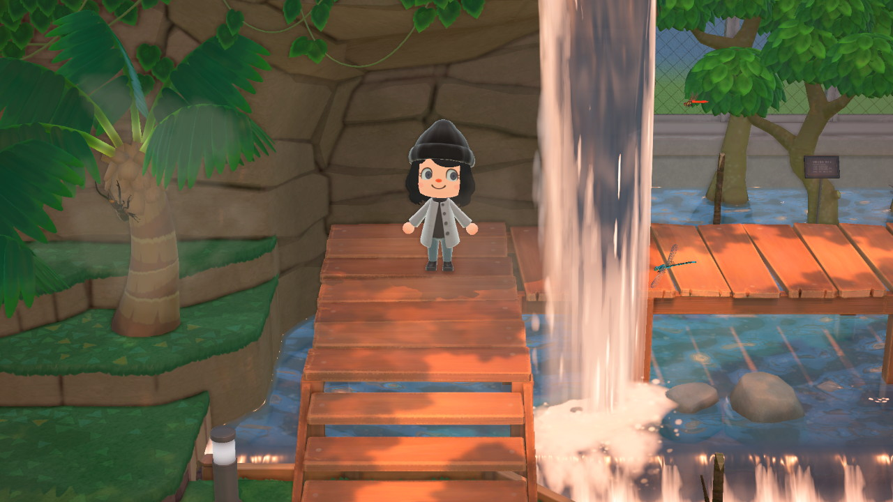
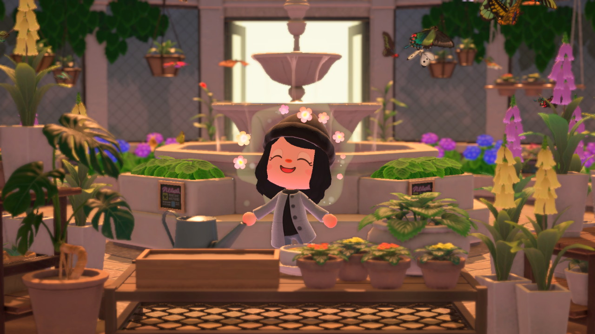
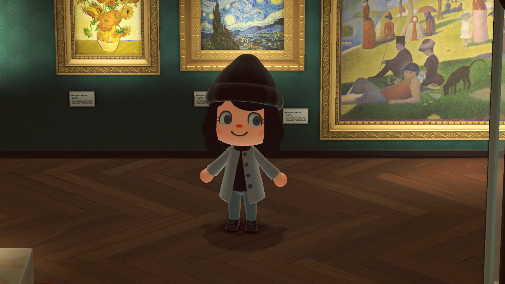
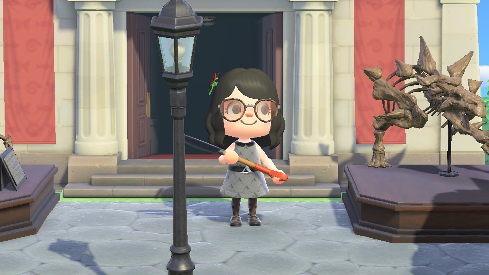
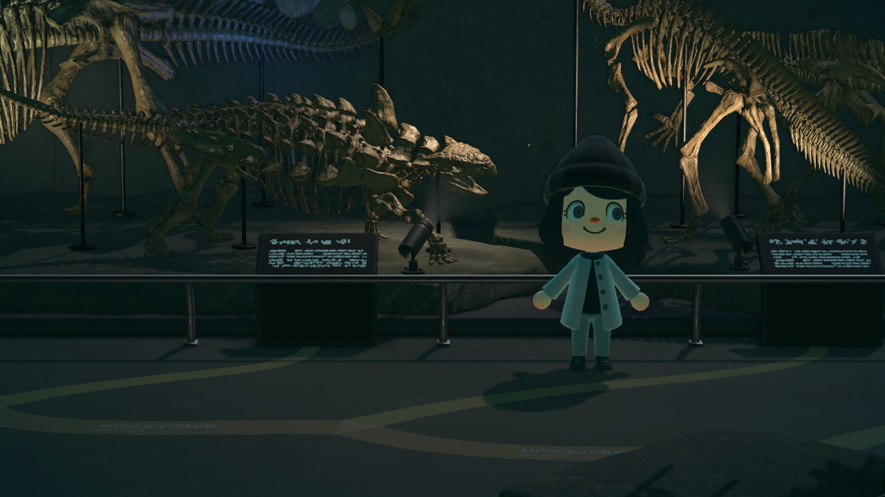
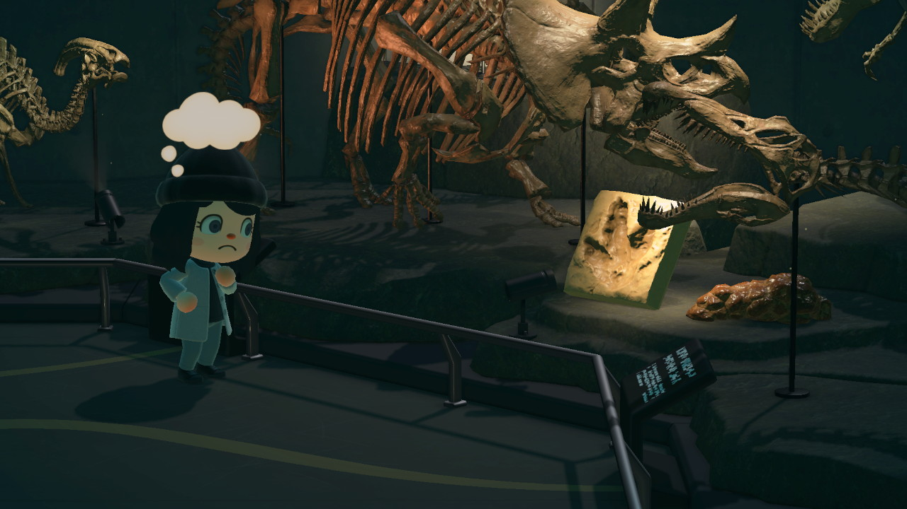
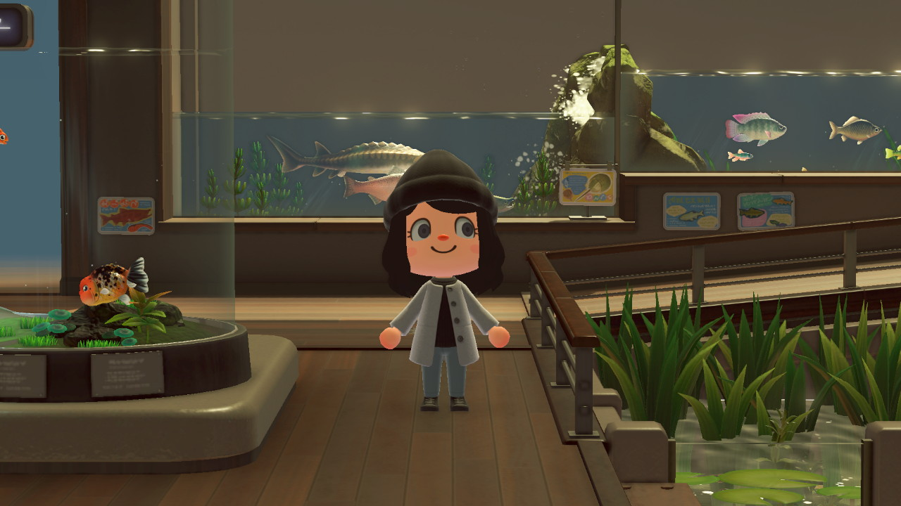
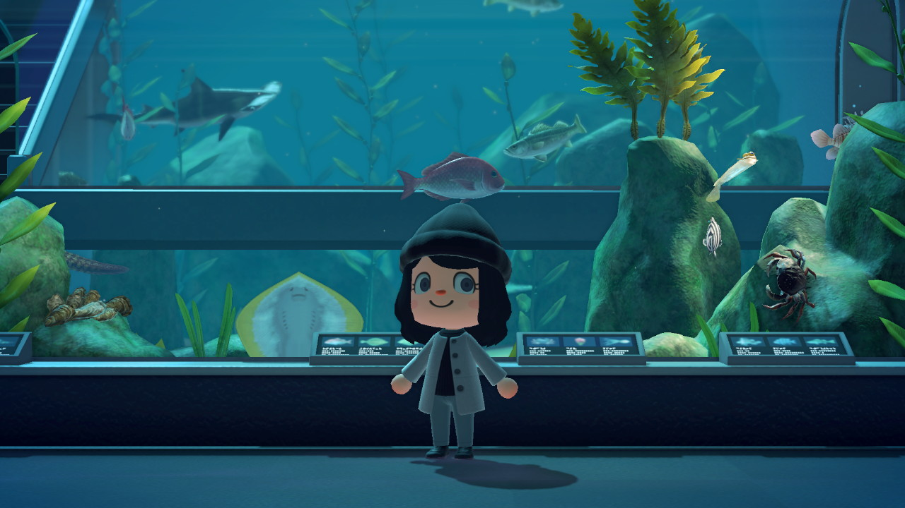

All-Seasons Bug Exhibit
Take a hike through our bug exhibit and explore a variety of native insects who also call Moon Isle home.
Beautiful Butterfly Garden
When you're done swimming with the fish in the ocean, come sit with the butterflies.
Moon Isle's Art Exhibit Continues to Grow
Our meticulously curated exhibition of fine art continues to grow, and hopefully one day we'll complete it!
Moon Isle has a Complete Fossil Collection
A big thank you to Bella, Moon Isle representative and sole donor to the Moon Isle Museum!
Completed Collection of Fossils
Explore a complete collection of fossils detailing the long history of Moon Isle, waaaay before it was Moon Isle.
A Glimpse of Moon Isle's Past
Many of these past island inhabitants seem a lot scarier than the current residents of Moon Isle.
Expansive Aquarium
Our large aquarium let's you get up close to the fish you swam with in the ocean or caught a glimpse of in the river!
Is That a Shark?
Thanks to our off-shore netting that keeps Moon Isle swimming safe, this is the only place to see a shark up close!